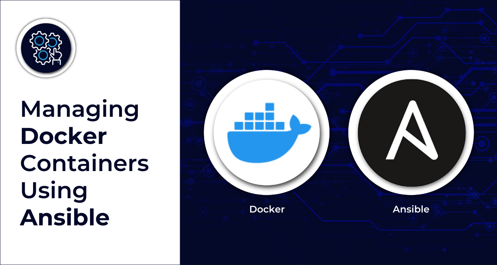
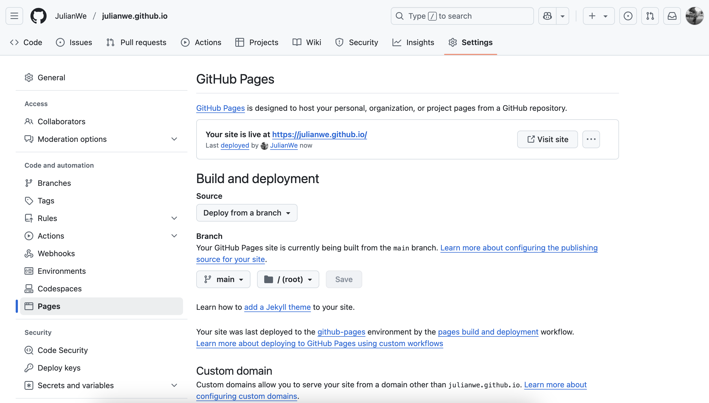

create a new repository with your username.github.io
git init username.github.io
git clone https://github.com/JulianWe/julianwe.github.io.git
cp julianwe.github.io/ansible username.github.io/build your own website with ansible role playbook “webpage.yml”
# Create Webpage using Ansible Playbooks & Roles
# Author: Julian Wendland
---
- hosts: localhost
tasks:
- name: Include variables from a file
include_vars:
file: "../roles/webpage/vars/main.yml"
register: vars
- name: Include the webpage role
include_role:
name: roles/webpage
...customize var/main.yml file with your information
# run ansible playbook with your information
cd username.gituhub.io
ansible-playbook playbooks/webpage.ymlhow to build webserver with docker container
FROM ubuntu:latest
RUN apt-get update && apt-get install -y curl
RUN apt-get update && apt-get install -y nginx
RUN apt-get install npm -y
RUN apt-get install nodejs -y
RUN apt-get install vim -y
COPY . /var/www/html/
CMD ["nginx", "-g", "daemon off;"]convert reamdme files to html blogposts and create index.html file using ansible
---
- name: Include variables from a file
include_vars:
file: "{{ path }}/roles/webpage/vars/main.yml"
register: vars
- name: convert README to HTML
shell: |
cd {{ path }}
for folder in roles/*; do pandoc -f markdown -t html5 $folder/files/README.md > roles/${folder#*/}/files/${folder#*/}.html;
done;
ls {{ path }}/roles
register: folder
- name: set project, URLs & directorys facts
set_fact:
name: "{{ item | trim ('/')}}"
file_path: "{{ path }}/roles/{{ item }}/files/{{ item | trim ('/')}}.html"
url: "https://julianwe.github.io/{{ item }}/{{ item | trim('/')}}.html"
loop: "{{ folder.stdout_lines }}"
loop_control:
index_var: index
register: facts
- name: set html content facts
set_fact:
html: "{{ lookup('file', item.ansible_facts.file_path) }}"
file_path: "{{ item.ansible_facts.file_path }}"
url: "{{ item.ansible_facts.url }}"
name: "{{ item.ansible_facts.name }}"
loop: "{{ facts.results }}"
register: html_files
- name: create project HTML sites
template:
src: "{{ blogpost }}"
dest: "{{ item.ansible_facts.file_path }}"
delegate_to: localhost
loop: "{{ html_files.results }}"
- name: build index html file
template:
src: "{{ index_html }}"
dest: "{{ index_file }}"
delegate_to: localhost
...make sure to select deploy from branch instead of GitHub Actions in repository settings https://github.com/username/username.github.io/settings/pages 